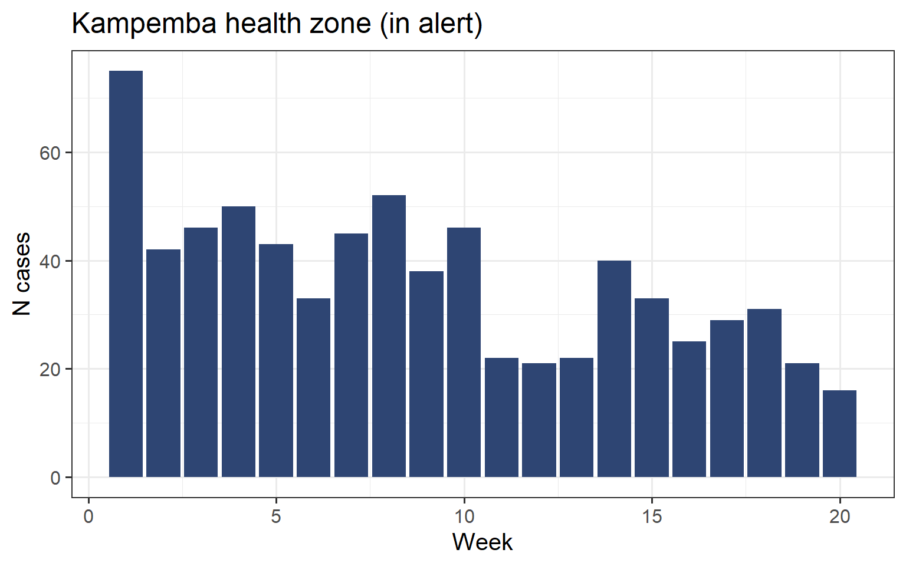
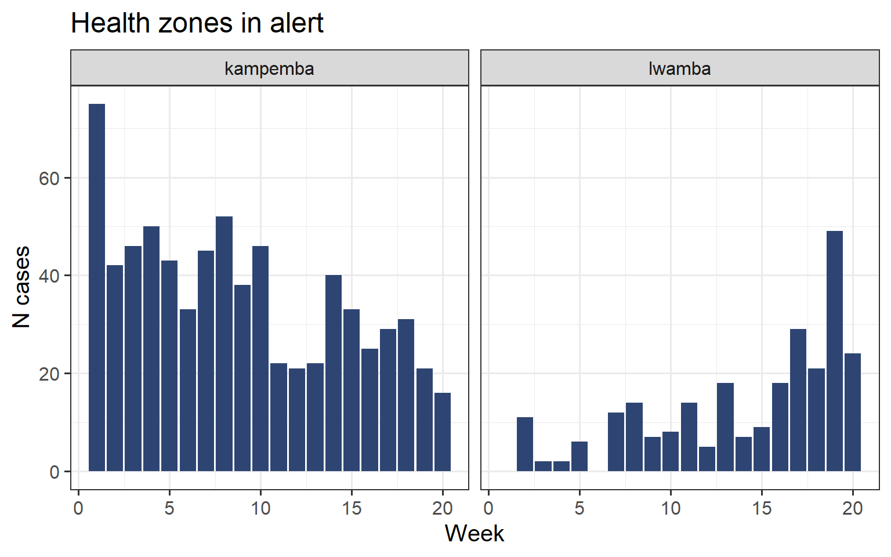

Surveillance
Objectives
- Reuse skills aquired in the FETCH-R modules (import, clean and visualize data)
- More specifically, analyze alert data to help decide which alerts to prioritize for further field investigation.
Introduction
This satellite is a companion to the case study Measles emergency response in the Katanga region (DRC) from the FETCH Surveillance module and may thus not make sense as a standalone document.
From an R point of view, this tutorial builds on skills acquired throughout the FETCH-R modules, introduces a couple of useful generalist functions, and some more specialized ones.
Do not hesitate to refer to past sessions and your own scripts to remind yourself of some functions!
Setup (Question 2)
Since this is part of a specific module, you will create a new RStudio project. We refer you to the main session for help creating a project and importing your data.
Setup a new project
- Create a folder
surveillance_case_studyassociated with the FETCH Surveillance module. Add the following subfolders in it:
- 📁 data
- 📁 clean
- 📁 raw
- 📁 R
- 📁 outputs
Create an RStudio project at the root of the
surveillance_case_studyfolder.Download the raw data.
4. Unzip the archive and save the two Excel files it contains in the subfolder data/raw.
5. Create a new script called import_clean.R and save it in the R subdirectory. Add a section to load the following packages: {here}, {rio}, and {tidyverse}.
Import data in R
Reminder from the case study: you requested access to the routine surveillance data and the laboratory data to the DRC MoH. The MoH agreed to share it with you on a weekly basis. The first dataset you received is of week 20 in 2022 (the data we are working on are simulated).
If you have not done it already, open the raw data files in Excel (or another equivalent application) to inspect them.
The surveillance dataset is pretty straightforward to import. The lab dataset is slightly trickier: the data headers do not start at line one. Fear not, the skip argument from the import() function is made for this situation:
# DO NOT RUN (PSEUDO-CODE)
import(
here("data", "raw", "example_file.xlsx"),
skip = 3 # Skip the first three lines and start importing from line four.
) Add a section to your script dedicated to data importation.
Import the surveillance data and store it into a
data_surv_rawdata frame. Then, import the lab data and save it in adata_lab_rawdata frame.Verify that the import went well for both data frames (Viewer, check the dimensions or start and tail of data frames).
Cleaning (Question 2 and 3)
Surveillance data (Q2)
Now that the data is correctly imported, we are going to perform some more checks, as usual, before a bit of cleaning.
Quick checks
During the case study you won’t have time to inspect and clean all columns in the imparted time, so for now we will focus on key columns: health_zone, week, totalcases and totaldeaths.
If you work on this tutorial in your own time, inspect the quality of the other columns and cross-check information of several columns. We refer you to the discussion of the case study for more checks to perform.
Add a section for the exploration and cleaning of the surveillance data into your script.
Now, explore the surveillance data frame and answer the following questions:
- What are the column names?
- How many provinces are in the dataset? Is this coherent with what you expect?
- How many health zones are in the dataset?
- What is the range of weeks?
- What is the min of
totalcaseses? - What is the max of the
totaldeaths? - Do you notice missing data for these columns? Are the strings of text clean?
Clean strings
Now that we have a better idea of what is the state of the data, let’s start cleaning. We are going to write a cleaning pipeline like we did in the main modules (check out your code for the end of the cleaning modules to see an example final pipeline).
To facilitate debugging your pipeline, add commands one by one, checking each new command before adding a new one.
We are going to perform a couple of actions on the columns containing text to remove potential problems:
- transform them to lower casse
- remove potential extra spaces
- replace
-and spaces by_.
Because you may not have the time to do all of text colums, work on the health_zone or the province column for the following instructions.
Start a cleaning pipeline with a mutate() that turns the chosen column to lower casse.
Now, we are going to introduce two handy functions for more text cleaning. The first one is the str_squish() function from the {stringr} package (help page here), that removes spaces at the start or end of the strings, and replace multiple spaces in the middle of a string by a single space.
examples <- c(" Trailing spaces ",
"Multiple spaces",
" Everything here ")
str_squish(examples)[1] "Trailing spaces" "Multiple spaces" "Everything here"The other function, str_replace (also from the {stringr} package) does what you expect from its name: replace something in a string by something else. It has a pattern argument that take the bit of text to be replaced, and a replacement arguments that takes the bit of text to use as replacement:
str_replace(
"HAUT-KATANGA", # A string of text (or a column, if used in a mutate)
pattern = "-", # The bit to replace
replacement = "_" # The replacement
)[1] "HAUT_KATANGA"Add steps to your mutate to:
- Remove all unwanted spaces from your chosen column
- Change the
-and to_in the column (in two steps)
The head of these columns should now be:
country province health_zone disease
1 drc haut_katanga mufunga_sampwe measles
2 drc haut_katanga sakania measles
3 drc haut_katanga mitwaba measles
4 drc haut_katanga kilela_balanda measles
5 drc haut_katanga likasi measles
6 drc haut_katanga kikula measlesStore the result data frame in a data_surv object.
Save the clean data
Use the {rio} package to export data_surv to a .rds file called data_ids_2022-w20_clean in the data/clean subfolder of your project.
Laboratory data (Q2)
We are going to follow the same steps as before for the lab data, and focus for now on the columns health_zone, igm_measles and igm_rubella.
Quick checks
Perform data checks on the colums names and dimensions. What are the categories for igm_measles and igm_rubella? What do you need to do to clean these columns?
Clean and recode strings
Start a new cleaning pipeline to clean the lab data. As before, for one of the text column, change it to lower casse, remove the extra spaces and replace the or
-by_.Recode at least one of
igm_measlesorigm_rubellacolumns so that the categories arenegatif,positifandindetermine.Store the cleaner version in a
data_labdata frame
The head of the cleaned columns should now be:
health_zone igm_measles igm_rubella
1 kambove negative negative
2 kambove negative negative
3 kambove negative positive
4 kambove negative negative
5 kambove negative positive
6 kambove negative negative
7 kambove negative negative
8 kambove negative positive
9 manika negative negative
10 kamalondo negative negativeYou can use the case_when() function to recode the IGM columns.
Save the clean data
Export the data_lab data frame to a .rds file called data_lab_2022-w20_clean in the data/clean subfolder of your project.
Going further
This is the end of the steps for question 2! If you finished in advance and there is still time, reuse the functions we just saw to clean the other text columns in both datasets and recode both IGM column in the lab dataset.
If you still have time, perform more checks on the data:
- Display the health zone for which the numbers by age group add up to a different number than the total (if any)
- Are there any health zone for which the number of deaths is higher than the total number of cases?
- Are there duplicated lines (fully duplicated, or several values for health zone and week)?
- Are there unrealistic case numbers?
Complete surveillance dataset (Q3)
During the case study and the data checks, you realized that some weeks are missing from the surveillance dataset. You discussed the possible reasons for it, and the associated problems. Here we are going provinceide code to create a dataset that contains all weeks (assuming that missing weeks had zero cases and deaths).
We will use the function complete() from the {tidyr} package to add the missing lines and fill the columns containing numbers (totalcases and totaldeaths) with zeros.
Look at the simplified example below: the Kitenge health zone has no row for week 2:
# Create simplified data frame for the example, with three weeks
example_df = data.frame(
province = c("haut_katanga", "haut_katanga", "haut_katanga", "haut_lomami", "haut_lomami"),
health_zone = c("likasi", "likasi", "likasi", "kitenge", "kitenge"),
week = c(1, 2, 3, 1, 3),
totalcases = c(2, 1, 3, 1, 2))
example_df province health_zone week totalcases
1 haut_katanga likasi 1 2
2 haut_katanga likasi 2 1
3 haut_katanga likasi 3 3
4 haut_lomami kitenge 1 1
5 haut_lomami kitenge 3 2We use the following code to make sure that all the health zones have all the possible week values. Since the weeks range from one to three in that toy example, we pass a vector with weeks ranging from one to three:
# Complete the missing week in kikula
example_df |>
complete(
nesting(province, health_zone),
week = seq(1, 3), # vector from 1 to 3
fill = list(totalcases = 0) # fill new lines with zero (default is NA)
) # A tibble: 6 × 4
province health_zone week totalcases
<chr> <chr> <dbl> <dbl>
1 haut_katanga likasi 1 2
2 haut_katanga likasi 2 1
3 haut_katanga likasi 3 3
4 haut_lomami kitenge 1 1
5 haut_lomami kitenge 2 0
6 haut_lomami kitenge 3 2Now both health zones within provinces have values for all three weeks.
You may be wondering why we used nesting(province, health_zone) and not just health_zone. The reason is that there could be two health zones in different provinces with the same name. So we need to keep the province column into account. The nesting() argument tells the function to only use the existing combinations of the two columns in the data frame.
If we were passing both column names to the complete() function, it would try to cross all levels of province to all levels of health_zone, which does not make sense in this case:
# Complete the missing week in kikula
example_df |>
complete(
province, health_zone,
week = seq(1, 3), # vector from 1 to 3
fill = list(totalcases = 0)
) # A tibble: 12 × 4
province health_zone week totalcases
<chr> <chr> <dbl> <dbl>
1 haut_katanga kitenge 1 0
2 haut_katanga kitenge 2 0
3 haut_katanga kitenge 3 0
4 haut_katanga likasi 1 2
5 haut_katanga likasi 2 1
6 haut_katanga likasi 3 3
7 haut_lomami kitenge 1 1
8 haut_lomami kitenge 2 0
9 haut_lomami kitenge 3 2
10 haut_lomami likasi 1 0
11 haut_lomami likasi 2 0
12 haut_lomami likasi 3 0It would be good to automatically pick the week series, since the data frame is going to change every week. To do that, we can remplace hardcoded values by the smallest and largest week number in the week column to get the range of weeks in the dataset:
# Complete the missing week in kikula
example_df |>
complete(
nesting(province, health_zone),
week = seq(min(week, na.rm = TRUE), # vector ranging from smallest to largest week numbers in dataset
max(week, na.rm = TRUE)),
fill = list(totalcases = 0)
) # A tibble: 6 × 4
province health_zone week totalcases
<chr> <chr> <dbl> <dbl>
1 haut_katanga likasi 1 2
2 haut_katanga likasi 2 1
3 haut_katanga likasi 3 3
4 haut_lomami kitenge 1 1
5 haut_lomami kitenge 2 0
6 haut_lomami kitenge 3 2Start a new pipeline that takes the
data_survdata frame and keeps only the columnsprovince,health_zone,weekandtotal cas.Add a new step to your pipeline and paste the following code to complete the data frame:
complete(
nesting(province, health_zone),
week = seq(min(week, na.rm = TRUE),
max(week, na.rm = TRUE)),
fill = list(totalcases = 0,
totaldeaths = 0 # also add zero to the totaldeaths column
)
) - Store the result of the pipeline in a data frame called
data_surv_weeks. The head of that data frame looks like:
# A tibble: 10 × 5
province health_zone week totalcases totaldeaths
<chr> <chr> <dbl> <dbl> <dbl>
1 haut_katanga kafubu 1 0 0
2 haut_katanga kafubu 2 0 0
3 haut_katanga kafubu 3 0 0
4 haut_katanga kafubu 4 0 0
5 haut_katanga kafubu 5 0 0
6 haut_katanga kafubu 6 0 0
7 haut_katanga kafubu 7 0 0
8 haut_katanga kafubu 8 0 0
9 haut_katanga kafubu 9 0 0
10 haut_katanga kafubu 10 0 0- When you are done, export that data frame to a
.rdsfile calleddata_ids_2022-w20__weeks_cleanin thedata/cleansubfolder of your project.
Going further
This is the end of question 3; if you are finished in advance, do not hesitate to carry on checking the data and listing potential problems and cleaning the columns. Or go explore the complete() help page` to better understand how the function works.
Defining alerts (Question 4)
Preparing the dataset
We are going to carry on preparing the datasets for the analyses.
If you have not had the time to clean both health zone and province in both datasets, as well as both igm columns in the lab dataset you can import cleaner versions of the data:
Unzip the archive in your data/clean subfolder and import the .rds files in your RStudio project using rio::import() as usual. Assign the cleaned data frames to data_surv, data_lab and data_surv_weeks and carry on.
Subset health zone
To simplify the work, we are going to focus on four health zones: Dilolo, Kampemba, Kowe, and Lwamba.
Start a new pipeline from data_surv_weeks. Its first step it to only retain data for the the Dilolo, Kampemba, Kowe, and Lwamba health zones.
Weekly indicator
The first indicator we want to caclulate is whether a health zone has 20 or more suspected cases in one week. This indicator is binary and only considers data in a given health zone and week, which corresponds to individual rows of our data frame.
Add a mutate() to your pipeline, to create a cases20 column that contains 1 if a given health zone has 20 cases or more in that week, and 0 otherwise.
The top of the data frame created by the pipe thus far looks like this:
# A tibble: 10 × 6
province health_zone week totalcases totaldeaths cases20
<chr> <chr> <dbl> <dbl> <dbl> <dbl>
1 haut_katanga kampemba 1 75 0 1
2 haut_katanga kampemba 2 42 0 1
3 haut_katanga kampemba 3 46 0 1
4 haut_katanga kampemba 4 50 0 1
5 haut_katanga kampemba 5 43 0 1
6 haut_katanga kampemba 6 33 0 1
7 haut_katanga kampemba 7 45 0 1
8 haut_katanga kampemba 8 52 0 1
9 haut_katanga kampemba 9 38 0 1
10 haut_katanga kampemba 10 46 0 1Cumulative indicator
The second indicator you want to calculate is whether a health zone has more than 35 cumulated suspected cases within three weeks. This is a bit more complicated than the previous case: within heath zone you need to calculate the sum of cases by groups of three weeks, but the groups are not fixed, they are rolling across time. We are getting in the teritory of moving averages/sums/etc.
Cumulative sum
We are going to use the rollapply() function from the {zoo} package, as it is versatile and powerful. As its name suggests, the rollapply() function applies a function in a rolling way to a vector or a column of a data frame.
Since we are constrained in time, we are going to provinceide the code of the rollapply() function to calculate the cumulative sum over three weeks, but check out the details in the Going further section when you have time.
This is how to do it for one health zone:
# Create mini example data frame
example_df = data.frame(
province = "Haut Katanga",
health_zone = "Dilolo",
week = 1:10,
totalcases = rep(1, times = 10))
example_df province health_zone week totalcases
1 Haut Katanga Dilolo 1 1
2 Haut Katanga Dilolo 2 1
3 Haut Katanga Dilolo 3 1
4 Haut Katanga Dilolo 4 1
5 Haut Katanga Dilolo 5 1
6 Haut Katanga Dilolo 6 1
7 Haut Katanga Dilolo 7 1
8 Haut Katanga Dilolo 8 1
9 Haut Katanga Dilolo 9 1
10 Haut Katanga Dilolo 10 1example_df |>
mutate(cumcas = rollapply(
data = totalcases, # The column to work on
width = 3, # Width of the window
FUN = sum, # Function to apply, here the sum
align = "right", # Windows are aligned to the right
partial = TRUE, # Allows calcul to be made even if window is less than three
na.rm = TRUE # Extra unamed argument to be passed to the sum function
)
) province health_zone week totalcases cumcas
1 Haut Katanga Dilolo 1 1 1
2 Haut Katanga Dilolo 2 1 2
3 Haut Katanga Dilolo 3 1 3
4 Haut Katanga Dilolo 4 1 3
5 Haut Katanga Dilolo 5 1 3
6 Haut Katanga Dilolo 6 1 3
7 Haut Katanga Dilolo 7 1 3
8 Haut Katanga Dilolo 8 1 3
9 Haut Katanga Dilolo 9 1 3
10 Haut Katanga Dilolo 10 1 3By health zone
Now, we want to do this cumulative sum by health zone. This is not that complicated: we are going to sort our data frame properly by health zone and week, and use the .by argument to tell the mutate() function to perform the action by health zone.
You may remember from the aggregation session how we summarized by groups using the .by argument in the summarize() function. This is exactly the same idea, except that instead of returning one value by group (as summarize() does), we want to return one value per row (as mutate() does).
As a little reminder of how summarize() + .by work, here is how we would calculate the total number of patients and deceased by province over the whole dataset:
data_surv_weeks |>
summarize(
.by = province, # Do things by province
cases_tot = sum(totalcases, na.rm = TRUE),
dead_tot = sum(totaldeaths, na.rm = TRUE)
)# A tibble: 4 × 3
province cases_tot dead_tot
<chr> <dbl> <dbl>
1 haut_katanga 5948 34
2 haut_lomami 6928 70
3 lualaba 1485 3
4 tanganyika 7836 137Add a step to your previous pipeline to sort the data frame by province, health zone and week with the
arrange()function.Then add the following code to calculate the cumulative sum:
mutate(
.by = c(province, health_zone),
cumcas = rollapply(
data = totalcases,
width = 3, # Width of the window
FUN = sum, # Function to apply, here the sum
align = "right", # Windows are aligned to the right
partial = TRUE, # Allows calcul to be made even if window is less than three
na.rm = TRUE # Extra unamed argument to be passed to the sum function
)
)Now that the complicated part is over (the calcul of the cumulative sum) we are left to summarize the information with a binary indicator, for heach week and health zone. Then we can create a second indicator, that aggregates the result of both the weekly and cumulative indicators, to say if an alert is to be raised.
Add a new step to your pipeline to calculate a binary indicator,
cumcases35that is1if the cumulative sum of cases for that week is equal or above 35 and0if not.Add a new column
alert, that is1if either thecases20indicator or thecumcases35indicator is1and0otherwise. You can use the|operator, which is R logical OR.When the pipe is working, assign the result to a
data_alertdata frame.
data_alert should look like this:
# A tibble: 10 × 9
province health_zone week totalcases totaldeaths cases20 cumcas cumcases35
<chr> <chr> <dbl> <dbl> <dbl> <dbl> <dbl> <dbl>
1 haut_kata… kampemba 1 75 0 1 75 1
2 haut_kata… kampemba 2 42 0 1 117 1
3 haut_kata… kampemba 3 46 0 1 163 1
4 haut_kata… kampemba 4 50 0 1 138 1
5 haut_kata… kampemba 5 43 0 1 139 1
6 haut_kata… kampemba 6 33 0 1 126 1
7 haut_kata… kampemba 7 45 0 1 121 1
8 haut_kata… kampemba 8 52 0 1 130 1
9 haut_kata… kampemba 9 38 0 1 135 1
10 haut_kata… kampemba 10 46 0 1 136 1
# ℹ 1 more variable: alert <dbl>Health zones in alert
After all this work we can finally investigate which health zones are in alert in the last week of our dataset (the now of the case study, week 20)!
Filter your data frame to only keep the 20th week. Which health zones are in alert?
Create a vector hz_alert that contains the name of the health zones in alert, so that we can use it to filter data from these health zones later.
Draw the epicurve (Question 4)
Let us draw the epicurves of health zones currently in alert (in alert during week 20).
We have drawn very similar curves in the epicurve session. Here again we will use the ggplot() function with the geom_col() geom to create a barplot showing the distribution of cases. Since we already have the number of cases per week we do not need to count it ourselved like we did in the past.
Draw an epicurve for one of the health zone in alert.
The graph should look like this (but maybe for another health zone):

The facet_wrap() function allows us to plot several subplots in the same graph (see the faceting satellite for more information on faceting):
data_alert |>
filter(health_zone %in% hz_alert) |>
ggplot(aes(x = week,
y = totalcases)) +
geom_col(fill = "#2E4573") +
theme_bw(base_size = 15) +
labs(x = "Week",
y = "N cases",
title = "Health zones in alert") +
facet_wrap(vars(health_zone)) # One graph by health_zone
Key indicators (Question 6)
Let’s gather more data on both alerts to help you decide which one to investigate.
This session builds on summarizing skills seen in the summary session. Do not hesitate to check it or your code if you forgot something.
Week of the first alert
Use the summarize() function to display the first week the alert was raised for each health zone in alert. Which health zone started first?
Surveillance data indicators
Let us go back to the full surveillance dataset that contains more columns of interest.
Add a column
cunder_5todata_survthat contains the the number of cases less than five months.Derive, for each health zone in alert, the following indicators (organized in a single table):
- The number of cases
- The number of deaths
- The number of less than five year olds
- The CFR in percentage
- The percentage of reported cases under five
The result should look like this:
health_zone n_cases n_deaths n_under_5 p_under_5 cfr
1 kampemba 730 0 544 0.7452055 0.0000000
2 lwamba 256 2 233 0.9101562 0.0078125Lab data indicators
Now we are going to use the laboratory data to derive a couple more indicators.
For each health zone in alert, derive the following indicators within one table:
- The number of patients tested for measles
- The number of positives for measles
- The percentage of positives for measles
- The number of patient tested for rubeole
- The number of positive for rubeole
- The percentage of positive for rubeole
The result should look like this:
health_zone n_test_meas n_test_meas_pos positivity_measles n_test_rub
1 lwamba 10 5 0.5000000 10
2 kampemba 14 4 0.2857143 14
n_test_rub_pos positivity_rubella
1 0 0.00000000
2 1 0.07142857Check out the section on summaries with conditions to remind you of the more advanced summaries.
Done!
Congratulation, you are done!
Going Further
Exploring the rollaply() function
If we want to do a cumulative sum of cases over three weeks, we want to apply the sum() function over windows of three weeks.
example_vect <- rep(1, time = 10)
example_vect [1] 1 1 1 1 1 1 1 1 1 1rollapply(
data = example_vect,
width = 3, # Width of the window
FUN = sum, # Function to apply, here the sum
align = "right" # Value at row i is the sum of i, i-1 and i-2.
)[1] 3 3 3 3 3 3 3 3We inputed a vector of ten values and obtained a vector of lenght height, containing the sums. Obviously the function has a way of dealing with the extremities, and the size of the output is smaller than the size of the input. This would be a problem in a mutate() that creates new columns in a data frame, that need to be the same length as the existing columns.
You can control the behavior at the extremities:
- Fill with
NAwhen there is not enough values to calculate a window of three - Allow partial sums (some values represent less than three weeks)
The argument fill = NA pads the extremities with NA (on the left in our case, since we aligned right):
rollapply(
data = example_vect,
width = 3, # Width of the window
FUN = sum, # Function to apply, here the sum
align = "right", # Windows are aligned to the right
fill = NA
) [1] NA NA 3 3 3 3 3 3 3 3It is a reasonnable way of dealing with incomplete windows. In our case however, we can do better: if there were 40 cases in week 1 it would be a cause for alert! We thus want the cumulative sum to be calculated from week one to be able to detect early alerts (keeping in mind that a lack of alert in the first two weeks may be a result of incomplete data). The partial = TRUE argument allows this:
rollapply(
data = example_vect,
width = 3, # Width of the window
FUN = sum, # Function to apply, here the sum
align = "right", # Windows are aligned to the right
partial = TRUE) [1] 1 2 3 3 3 3 3 3 3 3This is close to what we need.
A last point: you may remember that arithmetic operations in R return NA if some of the values are NA and we usually need to pass the argument na.rm = TRUE to the functions for them to ignore missing values.
If we had a slightly less complete vector we would have a problem:
example_vect_missing <- c(1, 1, 1, NA, 1, 1)
rollapply(
data = example_vect_missing,
width = 3, # Width of the window
FUN = sum, # Function to apply, here the sum
align = "right", # Windows are aligned to the right
partial = TRUE # Allows calcul to be made even if window is less than three
)[1] 1 2 3 NA NA NAFortunately we can pass the na.rm = TRUE argument to rollapply() so that it passes it to sum().
rollapply(
data = example_vect_missing,
width = 3, # Width of the window
FUN = sum, # Function to apply, here the sum
align = "right", # Windows are aligned to the right
partial = TRUE, # Allows calcul to be made even if window is less than three
na.rm = TRUE # Extra unamed argument to be passed to the sum function
)[1] 1 2 3 2 2 2Here we applied the sum() function to create a cumulative sum over 3 weeks. But you could, with minimal modifications, apply the mean() function to caclulate a moving average!
What about the align argument? It defines the position of the rolling windows compared to the value being calculated. The default is that the window is centered: the value i is the sum of values i, i-1 and i+1.
Example of the three alignements (pading with NA to better see what’s happening):
rollapply(data = c(5, 10, 1, 2, 5, 10),
width = 3,
FUN = sum,
align = "left",
fill = NA)
rollapply(data = c(5, 10, 1, 2, 5, 10),
width = 3,
FUN = sum,
align = "center",
fill = NA) # The default
rollapply(data = c(5, 10, 1, 2, 5, 10),
width = 3,
FUN = sum,
align = "right",
fill = NA)In our case we want the value for a given week to reflect this week and the week past, so we align the window right.
Pretifying percentages
The percent function from the {scales} packages can add percentage formatting to a value.
scales::percent(0.8556)It takes an accuracy arguments that controls the number of decimals:
scales::percent(0.8556,
accuracy = 0.1)You can wrap it around the values that you calulate in the summary tables to change the proportions into nicely formatted percentages. Note that once you are done the column is treated as text (since we added a % sign) and you will not be able to do further arithmetical operations on it.